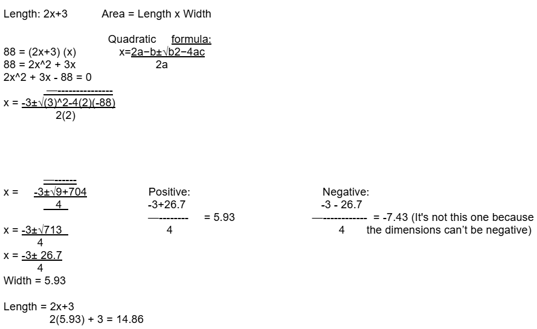

| ARTHMETIC SEQUENCE ANSWERS |
|---|
| PROBLEM ONE | PROBLEM TWO | PROBLEM THREE |
|---|---|---|
|
Nikki wants to start saving up money to buy a new dress. She puts away 50$ in the first month into her savings. In the second month, the amount of money in her savings is 125$. Find the general term of the sequence.
a1 = 50 ; d = 75
Final Answer: The general term of Nikki’s saving sequence is 75n - 25. |
Momo was collecting bamboo shoots for bamboo shoot soup. During his first hour, he collected 9 bamboo shoots. After 4 hours, he managed to gather 36 bamboo shoots. How many bamboo shoots has he collected per hour from the first hour to the fourth hour?
a1 = 9 ; an = 36 ; n = 4
|
Giovanni wanted to make a string of paper cranes by July 26, the day of the Wish Festival. He makes 2 paper cranes per day starting July 1. How many paper cranes would he have made by July 26?
a1 = 5 ; d = 5
|
| GEOMETRIC SEQUENCE ANSWERS |
|---|
| PROBLEM ONE | PROBLEM TWO | PROBLEM THREE |
|---|---|---|
|
Jake bought a limited edition sneaker for 250$. Because of its rarity, its resale price triples every year. How much will the sneaker that Jake bought be in 6 years? a1 = 250 ( Jake bought it for 250$)r = 3 ( The price triples every year ) n = 6 ( How much will the sneaker be in 6 years) an = a1 x r(n-1) a6 = 250 x 3(6-1)a6 = 250 x 35 a6 = 250 x 243 a6 = 60,750 Final answer: Jake’s limited edition sneaker that he bought for 250$ is now worth 60,750$ 6 years later! |
A couple bought a property in Portofino Heights for 50,000,000PHP in 2020. Every year since 2020 the value of the house went up by 5% due to the location of the house. How much would the house be valued in 10 years since the purchase? a1 = 50,000,000 PHP ( Initial price)r = 1.05 (The value increases by 5%) n = 10 ( how much would the house be valued in 10 years since the purchase) an = a1 x r(n-1) a10 = 50,000,000 x 1.05(10-1)a10 = 50,000,000 x 1.059 a10 = 50,000,000 x 1.551328 a10 = 77,566,400PHP Final answer: The house would be valued at 77,566,400PHP 10 years since the purchase |
Noel decided to start saving up money so that he can have an emergency fund. He put 500PHP in the first month but decided to increase the amount by 10% each month so that he can get it faster. How much money will Noel have by the 6th month? a1 = 500PHPr = 1.10 ( 10% increase every month) n = 6 ( how much will he have by the 6th month) an = a1 x r(n-1) a6 = 500 x 1.10(6-1)a6 = 500 x 1.105 a6 = 500 x 1.61051 a6 = 805.26PHP Final answer: Noel would have 805 Pesos and 26 Cents by the 6th month |
| HARMONIC SEQUENCE ANSWERS |
|---|
| PROBLEM ONE | PROBLEM TWO | PROBLEM THREE |
|---|---|---|
|
If 8 workers are assigned to the project, how many days will it take to complete? If the company wants the project completed in 10 days, how many workers should they assign? Given: 8 workers and 10 days
For the 8 workers: D = 30/8
10 days: n = 30/10
Final answer: 3 workers should be assigned in order for the project to be done in 10 days |
Anya is practicing the electric guitar using her amplifier, which has an initial sound intensity of 85 decibels. As the sound reflects off the walls in her room, each subsequent echo follows a harmonic sequence where the intensity decreases according to the pattern (1, 1/2, 1/3, 1/4, 1/5,...), what is the total intensity of the sound after 5 echoes?
First echo: 85 decibel x 1 = 85 decibels
Final answer: The total intensity after 5 echoes is 194.08 decibels |
Henry’s internet connection has a bandwidth of 250 Mbps, as more users connect to the internet, the speed per user follows a harmonic sequence:
How much speed does each user get if there are 5 users?
Final answer: 10 users each gets 25 Mbps |
| FIBONACCI SEQUENCE ANSWERS |
|---|
| PROBLEM ONE | PROBLEM TWO | PROBLEM THREE |
|---|---|---|
|
A flower bud has petals that swirl in a fibonacci pattern, with each petal positioned away from each other by the sum of the previous 2 petals. If the petals grew in a sequence of 1, 1, 2, 3, 5, 8, …, what position would the 14th petal be in? Fn = 14Fn = (1 + √5 / 2 )n / √5 F14 = (1 + √5 / 2 )14 / √5F14 = (1.618033989)14 / √5 F14 = 842.9988137 / √5 F14 = 377.0005305 F14 = 377 Final answer: The 14th flower petal is in position 377 |
A bank has an annual interest rate that follows the fibonacci sequence when it rises. So if the annual interest is 1%, 1%, 2%, 3%, 5%, 8%, …, for year 1, 2, 3, …, respectively, what percentage would the interest rate be in year 9? Fn = 9Fn = (1 + √5 / 2 )n / √5 F9 = (1 + √5 / 2 )9 / √5F9 = (1.618033989)9 / √5 F9 = 76.013155617 / √5 F9 = 33.9941166 F9 = 34 Final answer: Year 9 would have an interest rate of 34%. |
A tree sapling grows at a rate following the fibonacci sequence. If every month, the plant grows to be 1in, 1in, 2in, 3in, 5in, 8in, …, how tall would it be in month 25? Fn = 25Fn = (1 + √5 / 2 )n / √5 F25 = (1 + √5 / 2 )25 / √5F25 = (1.618033989)25 / √5 F25 = 167,761 / √5 F25 = 75,025 Final answer: The tree sapling will be 75,025in tall on month 25. |
| POLYNOMIAL EXPRESSION ANSWERS |
|---|
| PROBLEM ONE | PROBLEM TWO | PROBLEM THREE |
|---|---|---|
|
Simone is planning to buy a plot of land. The length of the land is 5 meters more than thrice the width. If the area of the land is 90 square meters, write a polynomial expression using the situation.
The width of the plot: x meters
Substitute: 90=(3x+5)*x
Final answer: 3x^2 + 5x - 90=0 |
A company is selling a product for x+2 dollars. Write a polynomial expression for the total revenue if they sell 25 products per day. Revenue=(x+2)x25 Distribute 2525x + 50 Final answer: 25x + 50 |
Kimi and Psalm are planning to build a restaurant that is triangle-shaped. If the triangle's base was x+1 meters, and the height is x meters. What would be the polynomial expression for the area of the triangle? The area A of a triangle: A=1/2 x Base x Height SubstituteA=1/2 x (x2+1)*x
Distribute the x
A=1/2 x3 + 1/2x Final answer: The tree sapling will be 75,025in tall on month 25. |
| POLYNOMIAL EQUATION ANSWERS |
|---|
| PROBLEM ONE | PROBLEM TWO | PROBLEM THREE |
|---|---|---|
|
Angelo is designing a rectangular pool because it was hot in the Philippines. The length of the pool is 3 meters longer than twice its width. The total area of the pool is 65 square meters. Find the width of the pool. Length = 2w + 3 65 = w(2w + 3)65 = 2w2 + 3w 2w2 + 3w - 65 = 0 w = (-b ± √(b² - 4ac)) / 2a a = 2, b = 3, and c = -65. b2 - 4ac = (3)2 - 4(2)(-65) = 9 + 520 = 529 [√529 = 23]w = (-3 ± 23) / (2 × 2) = (-3 ± 23) / 4 w = (-3 + 23) / 4 = 20 / 4 = 5w = (-3 - 23) / 4 = -26 / 4 = -6.5 (Not possible since width cannot be negative Initial answer: 2(5) + 3 = 10 + 3 = 13 meters Final answer: Width = 5 meters, Length = 13 meters |
Lebron is making a basketball court and a small football field . The length of the court and field is 4 meters more than its width. The total area of the court and field is 96 square meters. Find the width and length of the court and field. Length = w + 4Area = Length × Width
96 = w(w + 4)
(w + 12)(w - 8) = 0
Final answer: The width is 8 meters, and the length is 12 meters. |
Noel has a rectangular garden that is 3 meters longer than its width. The area of the garden is 88 square meters. What is the dimension of the garden?  Final answer: The dimensions of the garden is the length is 14.86 meters while the width is 5.93 meters. |